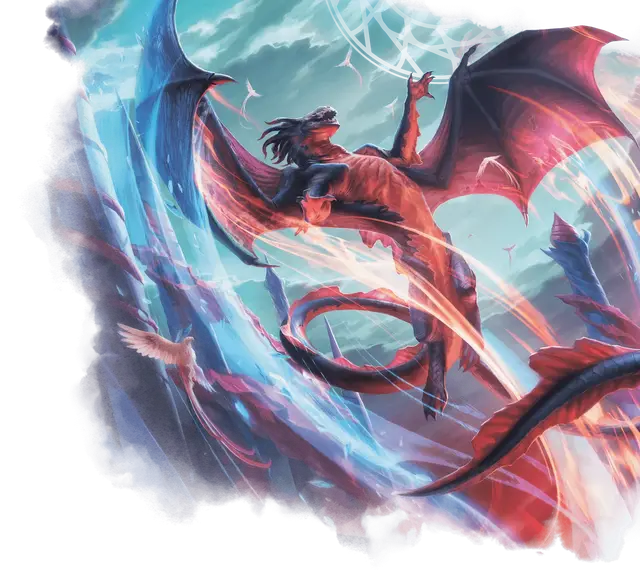

Галазет Призмари
Galazeth Prismari
Громадный Дракон (Чародей), хаотично-нейтральный, именной НИП

Класс Доспеха 21 (природный доспех)
Хиты 402 (23к20 + 161)
Скорость 40 футов, летая 80 футов
| мод | спас | ||
|---|---|---|---|
| СИЛ | 26 | +8 | +8 |
| ЛОВ | 14 | +2 | +9 |
| ТЕЛ | 25 | +7 | +14 |
| мод | спас | ||
|---|---|---|---|
| ИНТ | 18 | +4 | +4 |
| МДР | 20 | +5 | +12 |
| ХАР | 26 | +8 | +15 |
Навыки Акробатика +16, Восприятие +12, Выступление +22, Магия +18
Сопротивление урону электричество
Иммунитет к урону огонь, холод
Чувства слепое зрение 120 футов, пассивное Восприятие 22
Языки Общий, Драконий
Опасность 23 (50000 опыта)
Бонус мастерства +7
Особенности
Легендарное сопротивление (3/день). Если Галазет провалит спасбросок, он может вместо этого сделать спасбросок успешным.
Действия
Мультиатака. Галазет совершает одну атаку Укусом и две атаки Когтями.
Укус. . Рукопашная атака оружием: +15 к попаданию, досягаемость 15 футов, одна цель. Попадание: 13 (1к10 + 8) колющего урона плюс 5 (1к10) урона электричеством.
Коготь. . Рукопашная атака оружием: +15 к попаданию, досягаемость 10 футов, одна цель. Попадание: 11 (1к6 + 8) рубящего урона. Если целью является существо Большого размера или меньше, оно падает ничком.
Пляшущее стихийное дыхание (Перезарядка 5-6). Галазет выдыхает поток пламени и льда 90-футовым конусом. Каждое существо в этой области должно совершить спасбросок Ловкости Сл 22, не получая никаких преимуществ от укрытий (кроме полного укрытия) и получая 38 (7к10) урона огнём и 38 (7к10) урона холодом при провале или половину этого урона при успехе.
Использование заклинаний. Галазет накладывает одно из следующих заклинаний, используя Харизму в качестве базовой характеристики и без использования материальных компонентов (Сл спасброска от заклинаний 23):
• 1/день каждое: власть над водами [control water], порыв ветра [gust of wind], каменная стена [wall of stone].
Легендарные действия
Галазет может совершать 3 легендарных действия, выбирая из указанных ниже вариантов. Лишь одно легендарное действие может быть совершено за раз, и только в конце хода другого существа. Галазет восстанавливает истраченные действия в начале своего хода.
Коготь. Галазет совершает одну атаку Когтем.
Вспышка молнии (стоит 2 действия). Галазет перемещается на половину своей скорости полёта, не провоцируя атак. Когда он перемещается в пределах 15 футов от существа во время этого перемещения, это существо должно преуспеть в спасброске Ловкости Сл 22, иначе получит 11 (2к10) урона электричеством. Существо может получить этот урон не более одного раза за ход.
Текучее созидание (стоит 3 действия). Галазет волшебным образом призывает 1к4 талисмана–элементаля искусства [art elemental mascot] в незанятых пространствах, которые он может видеть в пределах 60 футов. Элементали искусства подчиняются его командам и начинают свой ход сразу после него. Любое существо, кроме элементаля искусства, получает 5 (1к10) урона огнём, холодом или электричеством (по выбору Галазета), если оно заканчивает свой ход в пределах 5 футов от одного или нескольких из этих элементалей искусства. Когда хиты одно из этих элементалей искусства падают до 0, Галазет может взлететь на 20 футов, не провоцируя атак. Эти элементали искусства исчезают через 10 минут, когда Галазет умирает или когда она снова использует это действие.
Описание
Дракон Галазет Призмари воплощает поток магии от вдохновения к художественному самовыражению, будь то через физическую форму или другую сенсорную среду. Его магия использует первобытную энергию — такую как пламя, молния и приливы — и сплетает их в зрелища, одновременно красивые и смертоносные.
Галазет основала факультет Призмари, чтобы гарантировать, что изучение магии никогда не будет сведено к чистой практичности. Его учения подчеркивают, что красота магии должна способствовать развитию культуры и личному эмоциональному росту. Галазет рассматривает динамичное выражение и точное совершенство как неизбежно конкурирующие силы, как внутри отдельных людей, так и в мире в целом.